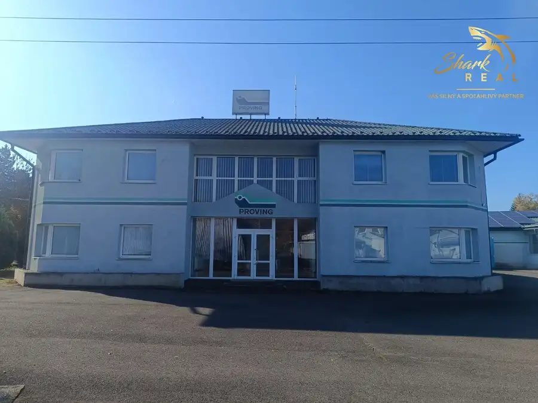
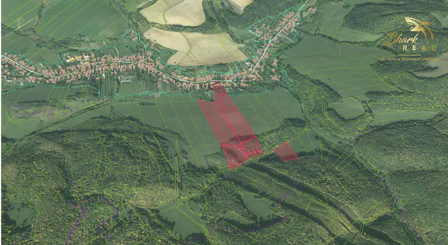

Exkluzívne na predaj rodinný dom s hosťovským domčekom, garážou a veľkým pozemkom v Bódvaszilase, Máďarsko
Reality
- Plocha105 m²
- StavČiastočná rekonštrukcia
- VlastníctvoOsobné
O nehnuteľnosti
Rodinný dom s hosťovským domčekom, garážou a veľkým pozemkom v Bódvaszilase – ideálny na bývanie, chalupu aj investíciuEXKLUZÍVNE: Shark real ponúka na predaj priestranný rodinný dom v obci Bódvaszilas, Akácos út (Maďarsko), len niekoľko minút od slovenskej hranice. Nehnuteľnosť sa nachádza v pokojnej ulici s výbornou dostupnosťou a kompletnou občianskou vybavenosťou.Táto nehnuteľnosť predstavuje výbornú príležitosť pre záujemcov o trvalé bývanie, rekreačné využitie alebo investíciu s potenciálom ďalšieho zhodnotenia.Základné informáciePozemok: 906 m²Zastavaná plocha domu: 120 m²Úžitková plocha: 105 m²Počet obytných izieb: 3Pivnice: 2 (spolu cca 40 m²)Samostatný hosťovský domček: 32 m²Garáž s elektrickou bránouDielňaStudňa na pozemkuElektrina 230 V / 380 VVšetky inžinierske siete (voda, plyn, kanalizácia)Dispozícia domuDom ponúka praktické riešenie priestoru:vstupná chodbapriestranná obývacia izbaspálňasamostatná izbakuchyňakúpeľňasamostatné WCNehnuteľnosť je podpivničená, pričom pivničné priestory poskytujú dostatok miesta na skladovanie, dielňu alebo vínnu pivnicu.Technický stavDom je postavený z tradičných hlinených tehál (vaľkov), ktoré sú známe svojimi výbornými tepelnoizolačnými vlastnosťami a príjemnou klímou počas celého roka.strecha – pálená škridlaplastové aj pôvodné drevené oknáčiastočná rekonštrukciaplynové ústredné kúrenie cez radiátoryzachované plynové gamatky ako alternatívny zdroj vykurovaniak dispozícií je aj kotol na tuhé palivoNový majiteľ si môže nehnuteľnosť dokončiť a upraviť podľa vlastných predstáv bez nutnosti rozsiahlych stavebných zásahov.Hosťovský domček – bonus navyšeNa pozemku sa nachádza samostatný murovaný domček s rozmermi 8 × 4 m (32 m²).Dispozícia:denná miestnosť s kuchynským kútomšpajzakúpeľňaVyužitie:hosťovský domubytovanie pre rodinuprenájom turistompracovňa alebo ateliérpodnikateľské účelyPozemokRovinatý a slnečný pozemok o výmere 906 m² ponúka:predzáhradkuuzavretý dvorzáhradudostatok priestoru na oddych, pestovanie alebo chov domácich zvieratLokalita a občianska vybavenosťBódvaszilas patrí medzi vyhľadávané obce v regióne Aggteleckého krasu. Ponúka pokojné bývanie v krásnom prírodnom prostredí s kompletnou občianskou vybavenosťou.Priamo v obci nájdete:materskú a základnú školupotraviny a základné službypoštuzdravotné strediskoobecný úradkultúrny dom a knižnicuautobusové spojenie do okolitých miestVýborná dostupnosťSlovenská hranica – cca 10 minútTurňa nad Bodvou – cca 15 minútMoldava nad Bodvou – cca 25 minútKošice – cca 45 minútMiskolc – cca 50 minútBenefity lokality pokojné bývanie bez ruchu veľkých miest nízke prevádzkové náklady a dane v Maďarsku krásna príroda Aggteleckého a Slovenského krasu turistické a cyklistické trasy v okolí jaskyne zapísané v UNESCO v bezprostrednej blízkosti vhodné na celoročné bývanie aj rekreáciu potenciál krátkodobého prenájmu turistom veľký pozemok a samostatný hosťovský domček garáž, dielňa, pivnice a studňaZáverAk hľadáte nehnuteľnosť s charakterom, veľkým pozemkom, výbornou dostupnosťou zo Slovenska a možnosťou ďalšej realizácie podľa vlastných predstáv, táto ponuka predstavuje mimoriadne zaujímavú príležitosť.Rodinný dom v Bódvaszilase je ideálnou voľbou pre bývanie, rekreáciu aj investíciu s potenciálom budúceho zhodnotenia.V CENE NEHNUTEĽNOSTI JE ZAHRNUTÉ:-kompletný právny servis spojený s predajom nehnuteľnosti-vyhotovenie rezervačnej, kúpnej zmluvy a návrhu na vklad do katastra nehnuteľností.-uhradenie správneho poplatku za návrh na vklad kúpnej zmluvy do katastra nehnuteľností-uhradenie poplatku za osvedčenie podpisov na kúpnej zmluve - poradenstvo / vybavenie financovania /-pomoc pri znaleckom posudkuBližšie informácie, prípadne termín obhliadky Vám rád poskytnem na tel. Č. 0952 154 859 alebo prostredníctvom emailu: stofik@sharkreal.sk SHARK REAL - VÁŠ SILNÝ A SPOĽAHLIVÝ PARTNER V OBLASTI REALÍT!
Parametre
| Doprava | MHD, Cesta, Vlak, Cyklistická infraštruktúra, Diaľkový autobus |
|---|---|
| Druh | Rodinný dom |
| Druh domu | Klasický dom |
| Dátum zverejnenia | 15. 6. 2026 |
| Energetický certifikát budovy | nie je |
| Plocha pozemku | 906 m² |
| Podpivničenie | Čiastočné |
| Počet kúpeľní | 1 |
| Počet nadzemných podlaží | 1 |
| Počet spální | 1 |
| Prístupová komunikácia | Asfaltová |
| Stav nehnuteľnosti | Čiastočná rekonštrukcia |
| Terén pozemku | Rovinatý |
| Typ | Predaj |
| Typ konštrukcie | Hlinená |
| Vlastníctvo | Osobné |
| Vybavenie | Pivnica, Predzáhradka, Dielňa, Záhrada |
| Vybavenie objektu | Holopriestor |
| Vykurovanie | Ústredné |
| Zariadenie | Nezariadené |
| Zastavaná plocha | 120 m² |
| Úžitková plocha | 105 m² |
Kde to je


Mohlo by Vás zaujímať

Komerčné priestoryNové10 Cena dohodouAdministratívno-apartmánová budova Snina 300 m² Predaj administratívno-apartmánovej budovy v tichej lokalite, s pozemkom a prístupovou cestouHľadáte ideálne miesto pre vaše podnikanie alebo…
PozemokNové7 Cena dohodouExkluzívne: Na predaj developerské územie 11,6HA pri Prešove Hrabkov 116012 m² EXKLUZÍVNE: Shark real ponúka na predaj DEVELOPERSKÉ ÚZEMIE 11,6 HA pri Prešove.Strategická investícia s intravilánom a nadväzujúcou územnou…